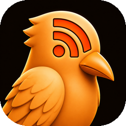
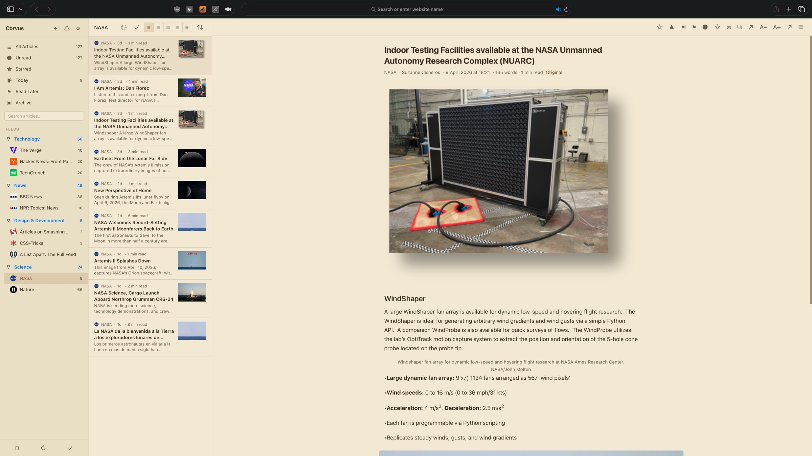

Corvus RSS
for Safari
Subscribe to your favorite websites, YouTube channels, and blogs. Read everything in one place with a native Safari extension for macOS, iOS, and iPadOS.
iOS 17.0+ · macOS 14.0+

Subscribe to your favorite websites, YouTube channels, and blogs. Read everything in one place with a native Safari extension for macOS, iOS, and iPadOS.
iOS 17.0+ · macOS 14.0+
Subscribe to any website with an RSS or Atom feed. Fast continuous refresh, auto-discovery, and built-in feed health tools.
Subscribe to any YouTube channel directly from its page with automatic @handle resolution. Hide Shorts from your feed to focus on full videos.
Group your feeds into folders and nested sub-folders. Keep Tech, News, YouTube, and Design neatly separated.
Magazine, list, card, expanded, and full-view layouts. Choose the reading experience that works best for you.
Save articles for later, star your favorites, and pin important items. Built-in smart feeds for quick access.
Navigate, star, refresh, and manage articles entirely from the keyboard. J/K to browse, S to star, V to open, and more.
Search across all your articles by title, content, or author. Find anything instantly, even in thousands of articles.
Pick from a visual grid of 7 themes, Light, Dark, Midnight, Sepia, Nord, Dracula, Solarized Dark, plus custom accent colors, font sizes, density settings, and newspaper-style column layouts.
Fully localized in 33 languages, including English, Spanish, French, German, Japanese, Korean, Portuguese, Chinese, Arabic, Hindi, Russian, Turkish, and more.
New feeds are automatically sorted into 20 category folders based on domain and keyword matching. No manual organization needed.
Bring your feeds from any reader with OPML import. Full folder hierarchy preserved, with progress tracking and duplicate detection.
Save articles with embedded images for reading without an internet connection. Your saved content is always available.
Monitor broken, stale, and error-prone feeds at a glance. Bulk disable inactive feeds and retry disabled ones with a single tap.
Create rules to automatically star, tag, mute, or archive articles based on keywords, feeds, or authors. Your inbox, your rules.
Built-in smart feeds for Today, Unread, Starred, Read Later, and Archived articles. Jump to what matters in one click.
Browse a curated directory of 5,000+ feeds across 34 categories and 47 countries. Find new sources in seconds, no URL hunting required.
A polished settings panel with 8 categories, live search across every option, and a What’s New sheet that surfaces release notes on first launch after every update.


Sidebar, article list, and reading pane. Navigate your feeds with speed.

Choose the theme that suits your environment. Easy on the eyes, day or night.

Download Corvus from the App Store. Available on Mac, iPhone, and iPad.
Open Safari Settings, go to Extensions, and enable Corvus. Grant permission for the sites you want to subscribe to.
Visit any website or YouTube channel, click the Corvus icon, and subscribe. Your articles appear instantly in the reader.
No sign-ups, no cloud sync, no login walls. Your feeds live on your device, ready instantly. Open Safari and start reading.
Subscribe to blogs, news sites, YouTube channels, Reddit, GitHub releases, podcasts, and any site with an RSS or Atom feed.
Not a Chrome extension ported to Safari. Corvus is built specifically for Safari with native performance, no background processes, and zero data collection.
Requires macOS 14.0 (Sonoma) or later, or iOS/iPadOS 17.0 or later. Works with Safari 17+.
Privacy-first apps for macOS, iOS, and Safari.